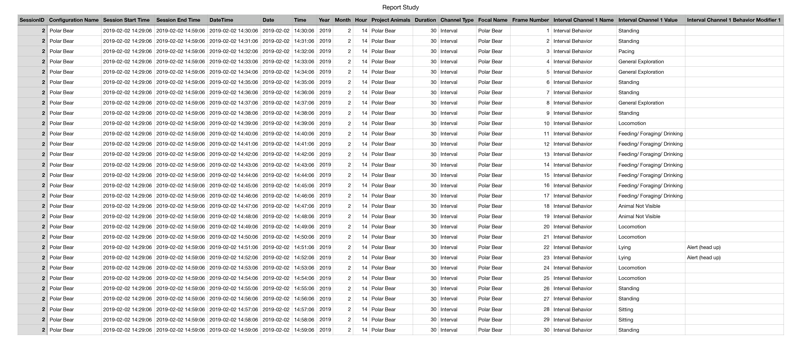
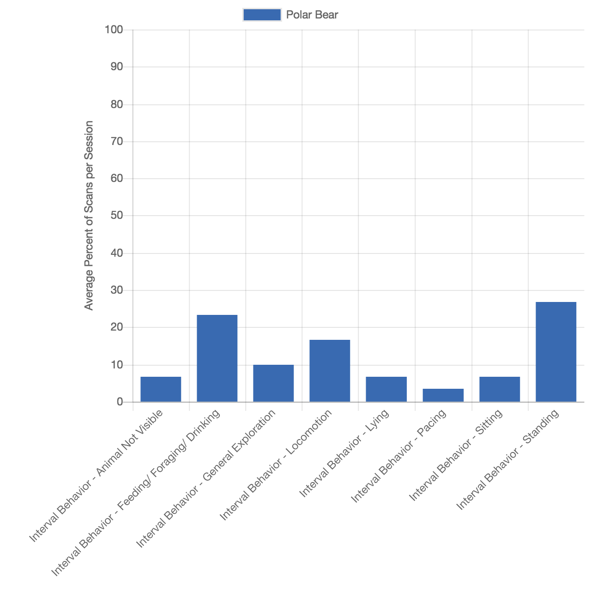
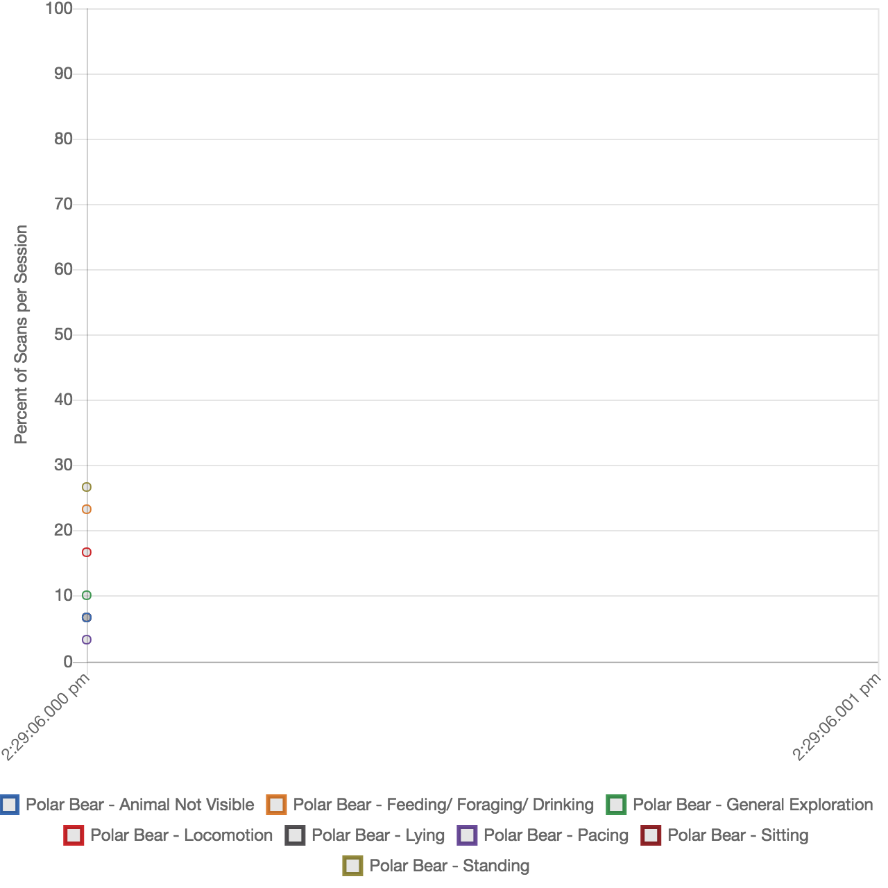
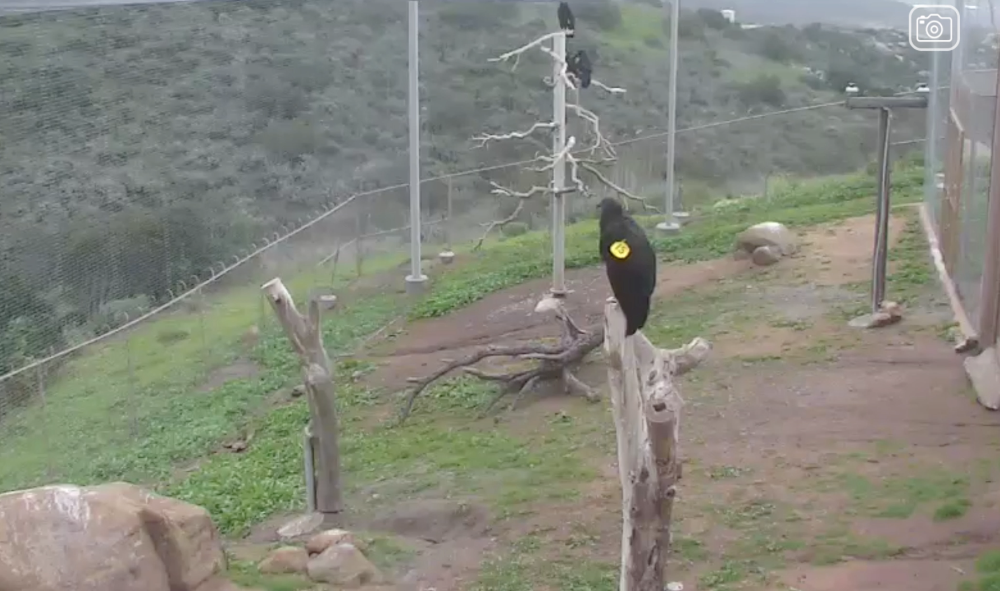
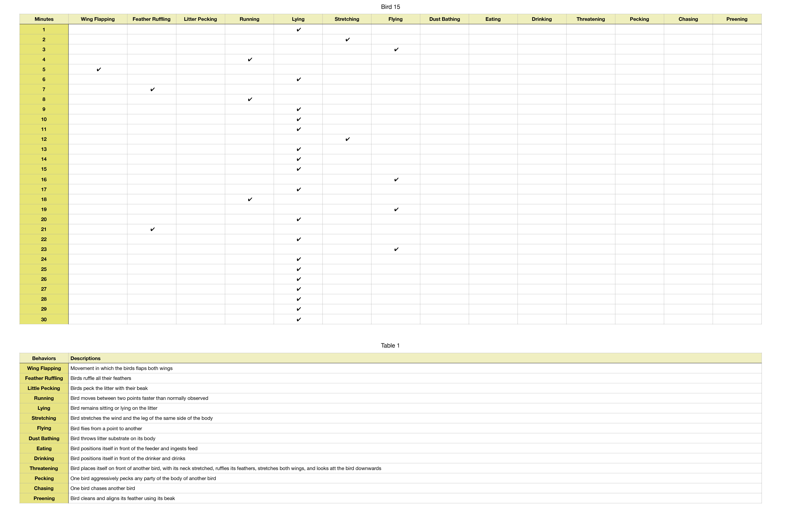
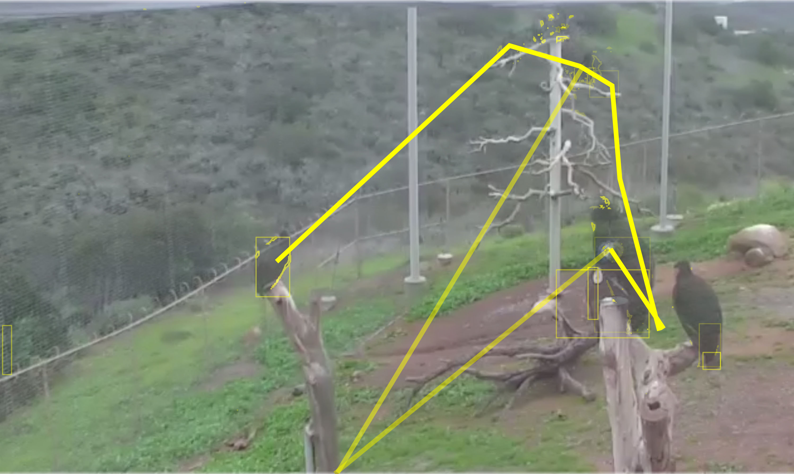

k // a
KAREN EL ASMAR
Week 2
Assignment Brief:
Observe two different animals for at least 30 minutes each. Sources of observation can be in the city, in the video, zoo live cameras or any other modes you find.
Document these observations either by some type of classical ethogram (one through pen/paper and the other through software like ZooMonitor) OR a modern technique such as computer-quantified video.
Ethograms:
An ethogram is a catalogue or inventory of behaviours or actions exhibited by an animal used in ethology. The behaviours in an ethogram are usually defined to be mutually exclusive and objective, avoiding subjectivity and functional inference as to their possible purpose.
Individual Project
For this assignment, I decided to study two different animals: a polar bear and a condor. I watched a live cam of both of these animals for 30 minutes on the San Diego Zoo website. For both, I used Instantaneous Sampling to record the animals behavior at time intervals of 1 minute.
Ethogram 1 - Polar Bear
For my first ethogram, I used the ZooMonitor application. This application really makes the data collection of this behavior easy. While using it, I was able to really focus on the animal's behavior without distractions. Yet, I believe that the technique I used might have some limitations as I felt so tempted to record a behavior that was not happening on the 1 minute time interval. For this, I feel that some important behaviors might have been lost. Hence, I believe that for recording a 30 minute or so ethogram, a continuous method would've been better, especially since I was already continuously watching for 30 minutes straight.

My Results

 
Experts: Dr. Steven C. Amstrup, Alysa McCall, Steven Amstrup
Ethogram 2 - Condor
For this ethogram, I started by first identifying which condor I will be recording as I thought that it will be hard to keep track of all condors visible at the same time. The one I chose is the bird with the yellow tag and number 15, simply because I felt that the yellow color contrasted well with the background and was easy to keep track of. This time, I decided to use the "pen & paper" method to record wherein after setting my ethogram, I recorded the time and the bird's behavior manually.

First Iteration Results

Yet, driven by the conclusion from my first ethogram, and the limitation to focus on only one bird from my first method, I decided that to try to use processing and openCV to have a more "automated" approach to recording these behaviors.
My aim for this approach was to keep track of the movement of all birds at the same time. To do this, my first goal was to be able to use computer vision to recognize the birds and keep track of each one alone. My next goal was to be able to take frames from the video at 1 minute or less intervals and draw a path for each bird as it moves from one spot to the other.
Hence, I first recorded a 30 minute video of the live cam, placed the video in processing and used OpenCV to select the birds. By color tracking, I was able to identify the birds and draw a yellow rectangle around them. Also, using the OpenCV library, I was able to represent the mvoement of the birds by comparing each frame of the video to the one before it in order to recognize movement of the birds in the video.
Second Iteration Results



Due to my current coding skills, I was able to relatively achieve a certain percentage of what I intended to do. However, after trying this I realized that this approach has a huge potential in recording behavior. Other than the obvious reason of being able to track all birds at once, some of the uses I thought of were to use the contouring method to keep track of the birds' "area"(stretching), track of the birds wings' movement(wing flapping), head movement as well as distance moved(running or flying).
Experts: Chris Parish, Michael P. Wallace